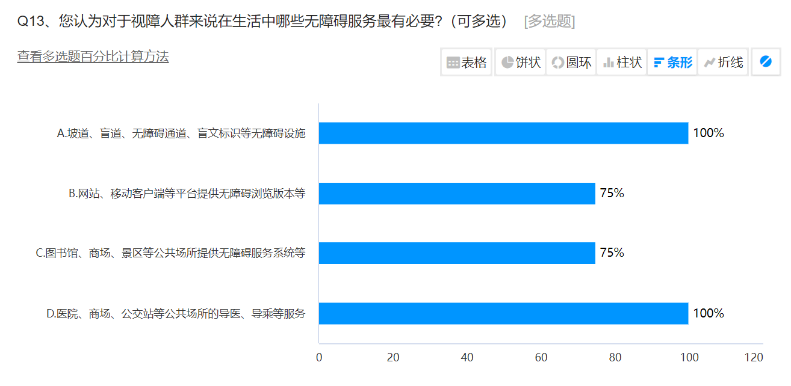

问卷调查数据分析
我们向大众投放了团队拟定的关于视障人群无障碍出行的调查问卷，本次收集共获得12份调查问卷，其中有11人是18-30岁群体，1人为31-45岁；受访者学历均在本科及以上。下面是我们问卷调查的部分重要数据：
Q1：根据您的现实生活情况，视障人员通常是如何获取交通道路信息的？
根据调查数据，视障人士获取交通道路信息的主要方式是记忆路线、依赖听觉、使用导盲犬这三种，选择使用辅助软件、口头询问他人的较少，由此可以看出视障人群还不适应使用辅助软件或者目前市面上的辅助软件并不能很好地帮助他们自主出行。
Q2: 您觉得视障人员在获取道路信息时最大的困难是？
根据调查数据，视障人士在获取道路信息时遇到的主要困难有缺乏实时交通更新、信息不准确或者过时、公共场所内部导航困难、难以理解和使用辅助技术，由此可以看出一款具有高实时性、高准确性，且设计更为细致、更易上手操作的导航软件，对于视障人群而言，无疑是迫切需要的。
Q3: 您认为哪些技术或者工具最能有效帮助视障人员获取交通信息？
根据调查数据，大多数受访者认为音频导航应用最能有效帮助视障人士获取交通信息，带有触觉反馈的智能手表或手环、公共交通的无障碍信息广播、社区志愿者或专业引导服务等也有一定作用，由此可以看出多元化的辅助手段对于提升视障人士的出行便利性和安全性具有重要意义，社会各界也应继续探索和创新更多实用的辅助技术和服务模式，以满足视障群体的实际需求。
Q4: 您认为社会上对视障人员获取交通信息的困难的认识和支持是否足够？

根据调查数据，绝大多数受访者认为社会上对视障人群获取交通信息的困难的认识和支持一般或不够，由此可以看出尽管在辅助技术和无障碍设施建设方面取得了一定进展，但社会整体对于视障人士出行难点的认知和支持力度仍有待加强，我们应该进一步提升对视障人群无障碍出行需求的理解并积极帮助他们实现自主独立出行。
Q5: 您对本区的无障碍环境建设评价？
根据调查数据，只有四分之一的受访者认为本区无障碍环境建设比较好，绝大多数选择了一般，由此可以看出本区的无障碍环境建设还有可以优化的地方，虽然我们在无障碍环境建设方面取得了一定成绩，但仍需不断努力，以满足包括视障人士在内的所有需要无障碍设施人群的需求。
Q6: 您认为对于视障人群来说在生活中哪些无障碍服务最有必要？
根据调查数据，受访者认为建设无障碍设施和公共场所服务引导都是非常有必要的，信息平台无障碍浏览、公共场所无障碍服务服务系统的建设也很重要
Q7: 您认为以下手机应用的功能和特点哪些对视障人群的出行更有帮助？
根据调查数据，受访者认为对视障人群出行最有帮助的功能是提前提示避障、语音提示行程信息（指示灯、途径站点等），其次为远程报警和无障碍地图，由此可以看出对于此类应用程序，功能重点应该落在感官反馈（听觉：语音、触觉：震动等）和信息实时更新
（以上是我们问卷调查的数据分析结果，感谢所有参与者的宝贵意见。）